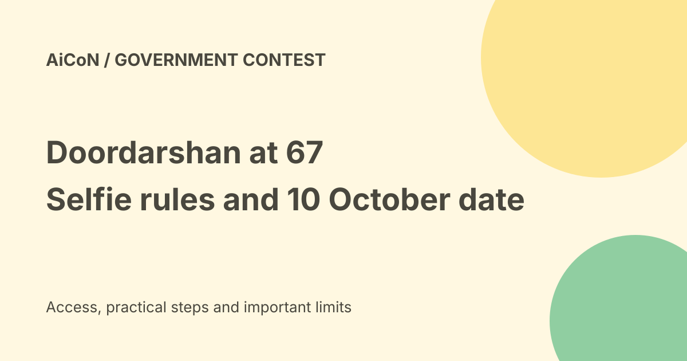

DD@67 selfie contest: 10 October deadline, entry rules and reward
The current official MyGov page lists the Doordarshan at 67 selfie contest end date as 10 October 2026 at 23:45 IST. That differs from the 30 September date in the earlier AiCoN post. Ten selected viewers are described as receiving a Delhi studio invitation and a DD National show feature, not a cash prize.

What is this contest?
Doordarshan and MyGov invite viewers to watch DD National, take an original selfie with the programme visible on their television and submit it through the official contest page.
The page marks Doordarshan's sixty-seventh anniversary. The entry is tied to actual viewing, not a generic selfie beside any screen or a recreated channel logo.
Current deadline
The checked official page lists the end date as Saturday, 10 October 2026 at 23:45 IST. The earlier archived post gave 30 September. Use the current official page rather than the older post when planning an entry.
Organisers reserve the right to change or withdraw the contest. Check the live page again before submitting, and do not leave the upload until the last few minutes.
Eligibility and cost
The official terms say the contest is open to Indian citizens and has no entry fee. Register on MyGov and keep your profile accurate.
No fee is not a promise that every expense is covered. The checked materials do not establish reimbursement for travel, accommodation or other costs associated with a Delhi visit.
What must appear in the selfie?
The photo should show you with the programme and the DD National channel identity clearly visible on your television screen. The photo must be original and created by the participant.
Do not replace the programme or channel identity with an edited overlay. A recognisable screen and honest viewing details help the jury assess relevance and authenticity.
Required submission details
The page asks for the programme or serial name, its telecast date and the date the selfie was taken. These dates may be different, so record them carefully rather than guessing later.
A caption about your viewing experience, favourite programme or Doordarshan memory is optional but recommended. Keep it true and relevant rather than filling it with copied promotional text.
Profile and privacy
The terms require correct name, email address, telephone number and postal address with state. They say contact details are used for the contest.
Before submitting, inspect the background of your photo. Keep private papers, addresses, family details and other people's faces out unless their presence is appropriate and permitted.
What do winners receive?
A jury selects ten winners based on authenticity, creativity and relevance. The official description says they will be invited to Doordarshan's New Delhi studios and featured on the Doordarshan Morning Show on DD National.
This is recognition and a studio invitation, not an advertised cash award. Do not assume a guaranteed date, paid trip or particular broadcast format beyond the official wording.
Rights and withdrawal
The terms say an entry cannot be withdrawn once submitted. They also allow organisers to use entries for promotion, with credit, on a royalty-free basis.
That is a real publication decision. Review the photo, caption and permissions before upload, especially if someone else appears in the image.
A submission checklist
- Open the official MyGov contest page.
- Recheck the current deadline and rules.
- Watch a DD National programme within the contest period.
- Take an original clear selfie with the programme and channel identity visible.
- Record programme name, telecast date and photo date.
- Check that your MyGov profile is accurate.
- Review the photo background and any optional caption.
- Read the rights and no-withdrawal terms.
- Submit through MyGov and keep the available acknowledgement.
The terms warn that proof of sending is not proof of receipt. Make sure the site shows the upload result. This guide did not register an account or submit an entry.
Finding DD National
The official task page links to a channel-numbers document. Use it and your television provider's current listing rather than assuming one channel number works everywhere.
If the channel identity is not visible in your photo, take a clearer photo instead of adding it digitally. The required evidence is the programme on the TV screen.
Results and scams
The rules say winners will be announced through the MyGov blog and unselected entrants may not receive a notice.
A message asking for an entry fee or claiming a cash prize does not match the checked contest terms. Verify any winner communication through official channels before sharing more information or paying anything.
What changed since the original post?
The live end date is now 10 October rather than the archived 30 September date. We add the Indian-citizen requirement, no-withdrawal rule, royalty-free promotional rights and the lack of verified travel reimbursement.
Frequently asked questions
Is there a cash prize?
The official reward description is a studio invitation and DD National feature.
Is a caption compulsory?
No. It is optional, but the page recommends one.
Can I withdraw after uploading?
The terms say no. Review before submission.
Sources: Current official task page and deadline · Official contest terms · Official linked channel-numbers document. Checked 7 October 2026.